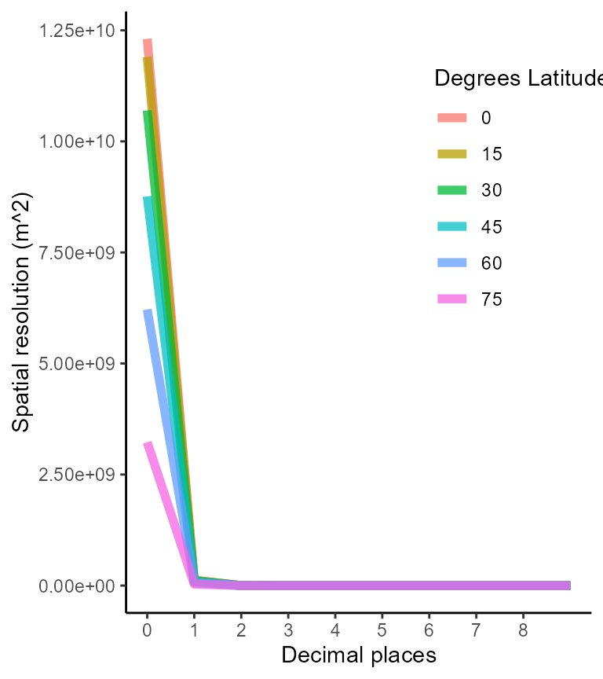
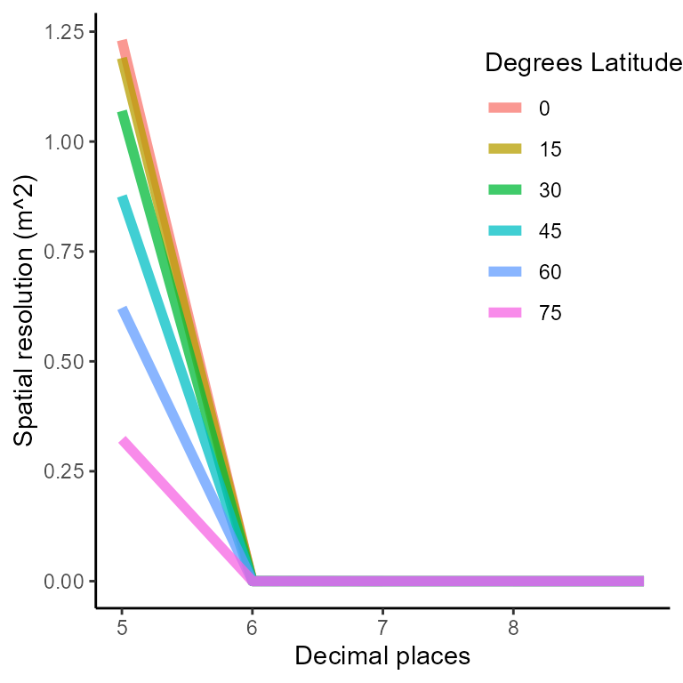
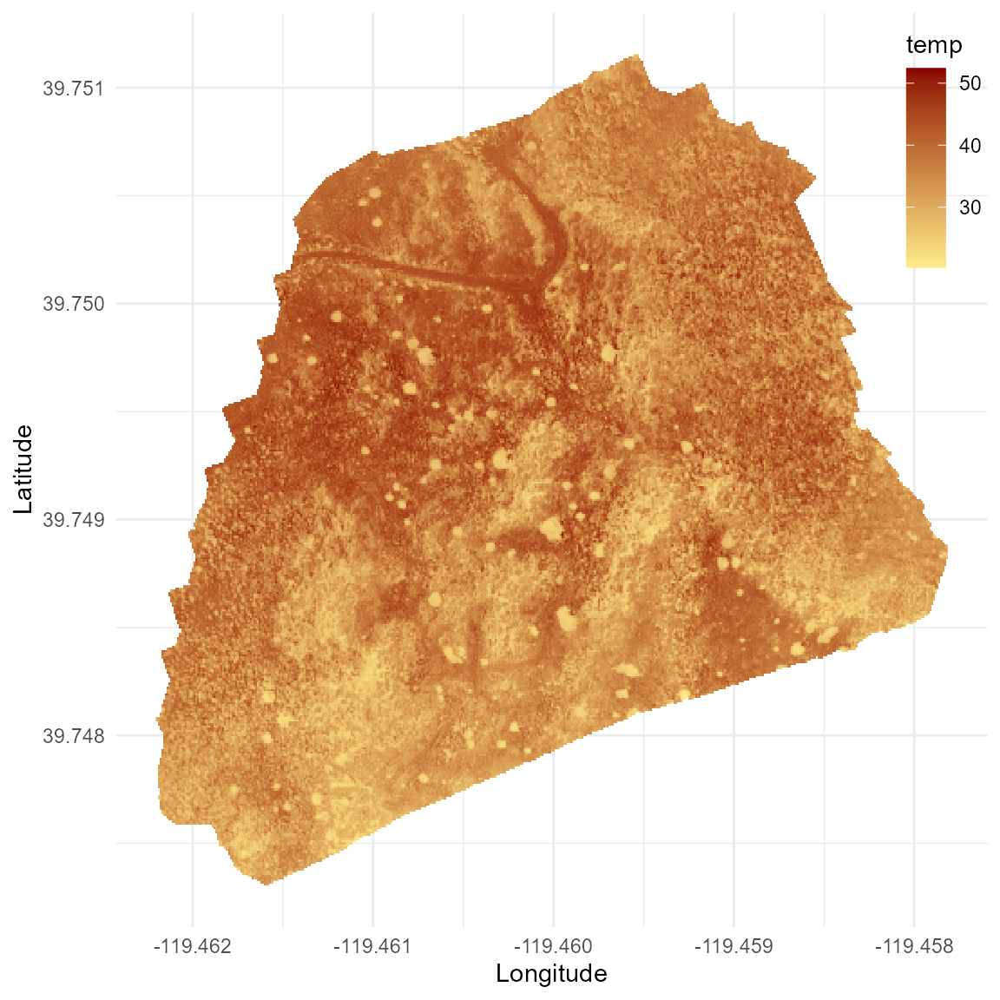
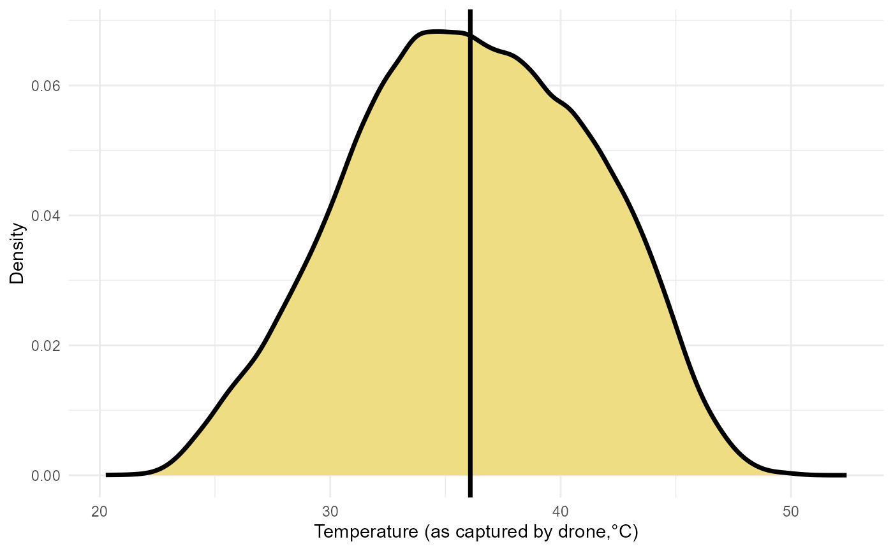

Reading & processing flight data
read_n_process_flight_data.RmdThe goal of this vignette is to show the process behind the function
read_n_process_flight_data. This function allows you to
read raw data from a drone flight in a .TIF file format
obtained by processing the images gathered during the flight itself. The
function will read and processes the .TIF file into a
tibble, a data.frame-like data structure that
makes this data easy to manipulate with R. To successfully
use this function you will need to install the following packages in
your system:
Luckily, these packages are included as dependencies for the
throne package so once you install and load it, they will
be automatically installed and loaded with it.
Step 1: Defining file path and processing information
First thing is to define the location of the .TIF file
you want to process. This kind of files are usually pretty big and
exceed GitHub’s maximum file size limit so keep that in mind when
managing your data. In our case, we stored flight information in a
separate folder locally. This was our file path:
filepath <- "C:/Users/ggarc/OneDrive/projects/throne_data/test_flight.tif"Before continuing, we you should also define the other 3
inputs of the read_n_process_flight_data function. First is
the Universal Transverse Mercator (UTM)
zone in which your drone flight took place. The UTM
coordinate system divides the world into 60 north-south
zones, each 6 degrees of longitude wide. To calculate which
UTM zone your flight took place, you can use the rough
longitude of where your flight took place and apply the formula:
\[
UTM_{zone} = \lfloor \frac{Longitude + 180}{6} \rfloor + 1
\] In my case, the average longitude of the flight used as an
example here was -119.45 so the UTM zone would
then be:
utm_zone = floor((-119.45 + 180) / 6) + 1
utm_zone## [1] 11The throne package also includes the
get_utm_zone function which will perform this calculation
for you. To use it, you can input a rough longitude of
where your flight took place but be aware that this value needs to be
between -180 and 180 because, unfortunately,
the Earth is NOT flat.
get_utm_zone(15.4)## [1] 33
get_utm_zone(195)## [1] "Error: Longitude values need to be between -180 & 180"Next we need to define the hemisphere in which the flight took place;
either north or south. In our case, the
example flight took place in the northern hemisphere:
hemisphere <- "north"Lastly, you will need to define the number of decimal digits that of
your coordinate. Using a decimal coordinate system (i.e.,
-119.45 instead of other coordinate systems like the DMS as
119° 27' 0" W which we highly discourage) each decimal
degree will convey a certain distance. These distances differ between
longitude and latitude degrees and will become smaller at higher
latitudes. As part of the documentation of this package we have included
a data set (spatial_resolution_lat_long.csv) to visualize
this pattern. Below is a plot generated with that data to express the
area of a rectangle in which each of the sides (representing longitude
and latitude) has a specific number of decimal digits (i.e.,
1, 0.1, 0.001 etc.) at different
latitudes.

We recommend a spatial resolution of 5 decimal
places since, for most latitudes, it will convey an area \(< 1 m^2\) which is a relevant scale for
the vast majority of terrestrial animals.
## Warning: Using `size` aesthetic for lines was deprecated in ggplot2 3.4.0.
## ℹ Please use `linewidth` instead.
decimal_places <- 5Step 2: Reading the flight’s file (.TIF) and
transform into a tibble object
Using the file path defined earlier, we can use the
raster function from the package of the same name in order
to read the file into your R environment:
raster <- raster(filepath)The file will load in as a Formal class RasterLayer
which can actually be plotted using base R:
plot(raster)
Then, can use the rasterToPoints function from the
raster package to transform our raster object into a
data.frame:
# transform into points
points <- rasterToPoints(raster)
# transform into data frame
df <- as.data.frame(points)
as_tibble(df)## # A tibble: 103,579,902 × 3
## x y layer
## <dbl> <dbl> <dbl>
## 1 289045. 4403039. 0
## 2 289045. 4403039. 0
## 3 289045. 4403039. 0
## 4 289045. 4403039. 0
## 5 289045. 4403039. 0
## 6 289045. 4403039. 0
## 7 289045. 4403039. 0
## 8 289045. 4403039. 0
## 9 289045. 4403039. 0
## 10 289045. 4403039. 0
## # … with 103,579,892 more rowsThe resulting data.frame will have 3
columns. First there is x and y, which are
equivalent to longitude and latitude (although
in different units, more on that on Step 3) and a
column called layer which is equivalent to the temperature
the drone captured in degrees Celsius. The number of rows of this data
frame will be heavily dependent on the resolution of your drone’s
camera. The example flight was obtained using DJI Matrice 200
V2 with a FLIR Zenmuse XT2 thermal imaging
camera which is a bit of an overkill. A 10th of observations would have
worked just fine.
It is important to note that the majority of observations on the
layer column are 0. This is not because the
temperature recorded by the drone was exactly 0 but because
the drone did not record data. If these 0 observations are
removed that reduces the size of the final data.frame
(presented as a tibble below) substantially:
## # A tibble: 62,634,505 × 3
## x y layer
## <dbl> <dbl> <dbl>
## 1 289283. 4403031. 27.0
## 2 289283. 4403031. 26.9
## 3 289283. 4403031. 27.1
## 4 289283. 4403031. 27.0
## 5 289283. 4403031. 27.0
## 6 289283. 4403031. 26.9
## 7 289283. 4403031. 27.2
## 8 289283. 4403031. 27.2
## 9 289283. 4403031. 27.2
## 10 289283. 4403031. 27.1
## # … with 62,634,495 more rowsStep 3: Transforming coordinates and generating final output
As pointed out earlier, the coordinate columns of the final
tibble obtained in the previous step are in a weird format.
Currently, x and y are defined as the distance
in meters to the western and northern edges of the UTM zone
where the flight took place. In other to correlate this information with
data from other sources, you will need to transform this data into a
decimal coordinate system. To do so, we first need to
define a projection string, which will provide the
information to the function project from the
proj4 package to perform this transformation. The
read_n_process_flight_data function will do this for you,
but here is what is happening behind the scenes:
# generate the string including utm_zone and hemisphere
string <- paste("+proj=utm +zone=", utm_zone," +", hemisphere," +ellps=WGS84 +datum=WGS84 +units=m +no_defs", sep = "")
string## [1] "+proj=utm +zone=11 +north +ellps=WGS84 +datum=WGS84 +units=m +no_defs"We can then project our data into decimal coordinate
units. This is the computationally longest step of the entire
process.
# project to decimal coordinates
coords <- as.data.frame(project(data.frame(x = df$x, y = df$y), string, inverse = TRUE))
head(coords)## x y
## 1 -119.4595 39.75115
## 2 -119.4595 39.75115
## 3 -119.4595 39.75115
## 4 -119.4595 39.75115
## 5 -119.4595 39.75115
## 6 -119.4595 39.75115Last but not least we need to define the spatial resolution at which
we are conducting our measurements which will be dependent on the amount
of decimal_places we defined earlier. Once more the
read_n_process_flight_data function will do this for you,
but here is what is happening behind the scenes:
# add temperature column to coordinates
coords$temp <- df$layer
# rename x & y columns
data <- coords %>% rename(long = x, lat = y)
# define decimal degrees on latitude and longitude measurements
data$long <- as.numeric(format(round(data$long, decimal_places), nsmall = decimal_places))
data$lat <- as.numeric(format(round(data$lat, decimal_places), nsmall = decimal_places))
# get mean temperature for same coordinates
data <- data %>% group_by(lat, long) %>% summarise(temp = mean(temp, na.rm = T)) %>% ungroup()## `summarise()` has grouped output by 'lat'. You can override using the `.groups`
## argument.
data## # A tibble: 105,045 × 3
## lat long temp
## <dbl> <dbl> <dbl>
## 1 39.7 -119. 33.9
## 2 39.7 -119. 31.9
## 3 39.7 -119. 30.5
## 4 39.7 -119. 33.6
## 5 39.7 -119. 35.0
## 6 39.7 -119. 33.7
## 7 39.7 -119. 33.7
## 8 39.7 -119. 32.7
## 9 39.7 -119. 33.5
## 10 39.7 -119. 28.1
## # … with 105,035 more rowsThe last summarizing step reduces the size of the data frame to the
point where this data can already be plotted using ggplot
tools and be part of any posterior analysis. For instance, we can
visualize it as a map using geom_tile or
geom_raster:
data %>%
ggplot(aes(x = long, y = lat, fill = temp)) +
geom_raster() +
scale_fill_gradient(low = "lightgoldenrod1", high = "red4") +
xlab("Longitude") + ylab("Latitude") +
theme_minimal() +
theme(legend.position = c(0.95, 0.85))
Note that the image plotted here is exactly the same as the one showed earlier when plotting theraster but altering the color
scheme. Additionally, we can already get some descriptive metrics of the
thermal landscape which we can visualize as a distribution:
data %>%
ungroup() %>%
ggplot(aes(x = temp)) +
geom_density(fill = "lightgoldenrod", linewidth = 1.25) +
geom_vline(aes(xintercept = mean(temp, na.rm = T)), linewidth = 1.25) +
xlab("Temperature (as captured by drone,°C)") + ylab("Density") +
theme_minimal() 